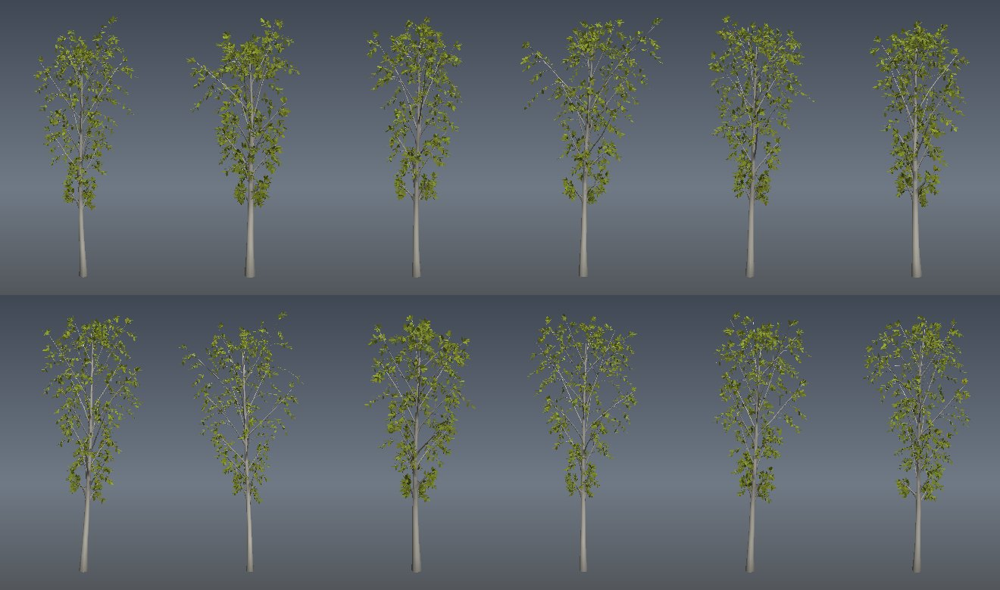

Tree editor for games · v0.1.0
Game-ready trees. Your agent can grow them too.
ArborStudio is a desktop editor that grows trees from trunk, branch, root and leaf generators and exports them as GLB or OBJ with four LODs, a billboard and wind weights. Every operation in the editor is also an MCP tool, so Claude Code or another MCP client can make the twelve variants you need while you do something else.
For game developers and environment artists who need many distinct trees and would rather script them than click out each one.
Free and open source. MIT licence. Source on GitHub.

An agent session, start to finish
Twelve birches for a northern forest, from one prompt.
A session run against v0.1.0 while writing this page: the prompt, the calls, and what came out. Long results are cut, nothing else is edited.
Prompt
Make 12 birch variants for a northern forest. Narrower crowns, a little early autumn colour. GLB with all LODs and billboards.
load_preset {"name": "Birch"} update_generator {"id": 2, "params": {"length": 0.36, "angle": 32}} update_generator {"id": 3, "params": {"gravity": 0.7}} update_settings {"autumn": 0.15, "leaf_color_variation": 0.3} get_stats {"all_lods": true} → lod0: 35,520 triangles, 13.3 m tall 116 ms export_variations {"count": 12, "format": "glb", "include_lods": true, "include_billboard": true} → Birch_v01.glb … Birch_v12.glb 1,434 ms + 12 billboard atlas PNGs

[TODO: screen recording of a real agent session, prompt → MCP calls → trees in the viewport. The calls above were sent by a script written for this page, not a chat client. Also: which MCP clients were tested.]
Then connect your agent with one command: claude mcp add --transport http arbor-studio http://127.0.0.1:7878/mcp
What ends up in the file
Four LODs, a billboard and wind weights, in one GLB.


Triangles per level, Oak preset, seed 1. Lower levels keep the skeleton and coarsen the mesh around it, so the outline holds when the engine switches. The billboard is the tree rendered from eight sides into one 4 × 2 atlas.
- Wind
- Two weights per vertex in
TEXCOORD_1(UV2).xis branch sway, from 0 at the ground to 1 at the crown tips.yis leaf flutter. Your vertex shader applies them; ArborStudio doesn't ship an engine shader. - Vertex colour
COLOR_0carries tint, per-leaf variation, autumn colour and baked ambient occlusion. Multiply it with the texture.- Materials
- Colour textures, normal maps and alpha-cutout leaf cards.
- Formats
- GLB, OBJ with MTL, or JSON with every stem as points and radii for your own tools. Meshes are named
Oak_LOD0toOak_LOD4. - Collision
- Convex hulls, named
UCX_for Unreal or-convcolonlyfor Godot if you pick it. - Engines
- The docs walk through the import into Unity, Unreal and Godot. [TODO: engines tested, with versions]

Every part has its own controls
A stack of generators, each with its own sliders.
Trunk, branches, twigs, roots and leaves are separate generators. Each one has its own settings, and most of them can follow a curve along the parent: longer branches low in the crown, steeper ones at the top.
- Count per parent
- Phyllotaxis
- Length (× parent)
- Crown profile
- Angle
- Gravity
- Wiggle
- Kink
- Taper
- Branch welding
- Broken branches
- Flutes
- Bark lumps
- Leaf fold
- Age
- Autumn
- Fallen leaves
- Ambient occlusion
| Preset | Triangles | LOD0 | All 5 levels |
|---|---|---|---|
| Oak | 21k | 17 ms | 103 ms |
| Birch | 36k | 24 ms | 112 ms |
| Willow | 41k | 42 ms | 223 ms |
| Pine | 75k | 96 ms | 404 ms |
Short enough that the viewport keeps up while you drag a slider.
[TODO: 10 to 20 s loop of a tree regenerating while a slider moves]
[TODO: wind animation loop]
ArborStudio and SpeedTree
SpeedTree does more. Here is where ArborStudio differs.
SpeedTree is the reference for game vegetation and has far more features. ArborStudio is younger and smaller, and it adds features when people ask for them.
| Aspect | ArborStudio | SpeedTree |
|---|---|---|
| Agent access | MCP server with 35 tools, over HTTP or stdio, with or without a window | No such interface |
| Price | Free, no seat limits | Paid licence |
| Source | MIT. Read and change the generator. | Closed |
| Features | Smaller set, grows from requests | Larger and more mature |
Not for you if
- you need a hand-sculpted hero tree for a cinematic,
- you need SpeedTree's full feature set today,
- you work in a film or VFX pipeline.
[TODO: confirm this list]
Rough edges in v0.1.0
- The macOS build isn't notarised yet. macOS asks you once to allow it under System Settings › Privacy & Security.
- Variations ignore hand edits to single branches.
[TODO: 5 to 10 real quotes from game developers about making trees, SpeedTree licensing and hand-modelled vegetation]
[TODO: founder note, 2 to 4 sentences, first person, signed with a real name]
Download
v0.1.0 for macOS, Windows and Linux.
- macOS 11 or laterArborStudio-macos-universal.zip12.4 MBApple silicon and Intel
- Windows 10 or laterarbor_studio-windows-x86_64.zip4.8 MB64-bit, no installer
- Linuxarbor_studio-linux-x86_64.tar.gz6.2 MBx86-64, X11 or Wayland
Or build it yourself. You need Rust:
git clone https://github.com/sandboxly/arbor-studio
cd arbor-studio
cargo build --releaseThe help has 22 pages with pictures, from a first tree to the full parameter reference. F1 in the app opens it. Read the docs →
1 Measured with the v0.1.0 release build on an Apple M2 Max, median of 20 runs for the oak above and of 20 seeds per preset in the table, timed through the MCP server. LOD0 includes growing the skeleton and building the mesh; all 5 levels includes rendering the billboard atlas.